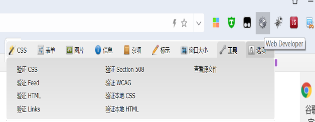

制作书源图文教程（第四版）
根据阅读最新版的变化（2.19073015），基于第三版教程，加上本人的理解和制作阅读书源以及制作异次元图源的一些经验，参考了原官方教程，详细的写了一下制作书源的详细过程，新手可参考此教程制作阅读的书源。
一、导读
1.什么是书源
书源就是按一定规则(主要也就是搜索页--详情页--目录页--内容页)编写的json文本，阅读app根据书源提供的参数调用原网站/app的搜索引擎，对网页或资源进行处理，最终获取书籍地址并显示正文。
此处对应后面教程【书源参数】
2.制作书源思路流程
回想一下我们我们找小说时的操作
打开某个网站，输入关键字搜索，然后进搜索结果里选择某本小说，进入详情页看简介，进入目录页看章节名和链接，选择某一章，进入内容页来看小说内容。
书源规则的制作就是按照这个思路来操作的，具体可以看后面的实战带的完整例子。
3.书源规则的制作方法类型
书源规则按制作方法类型目前可分为3大类，3大类规则可以混用。
Jsoup:优点:短小精悍，举例:tag.img@src
XPath:适用范围广，对于某些搜索列表没有用明显的标签如li或ul来区分不同书籍的，全部都是用div来区分的，用html取得不准确，可以用XPath:列表规则。
JSonPath: app以及某些站点数据采用json显示，需要用这个来取
本教程是以Jsoup为主来制作书源的
简单补充讲解一下html的知识
用浏览器任意打开一个网页(比如首页)，鼠标右键查看源代码可以看形如以下的文本
<html>
<head>
******
</head>
<body
******
</body>
</html>
这个网页源码用的就是标准的超文本标记语言，对应英文缩写html
标准的超文本标记语言文件都具有一个基本的整体结构，标记一般都是成对出现（部分标记除外例如：<br/>），即超文本标记语言文件的开头与结尾标志和超文本标记语言的头部与实体两大部分。有三个双标记符用于页面整体结构的确认。
<html></html>，<head></head>，<body </body>
标记符<html>,说明该文件是用超文本标记语言（本标签的中文全称）来描述的,
它是文件的开头;而</html>,则表示该文件的结尾，它们是超文本标记语言文件的开始标记和结尾标记。
<head></head>；这2个标记符分别表示头部信息的开始和结尾。头部中包含的标记是页面的标题、序言、说明等内容，它本身不作为内容来显示，但影响网页显示的效果。头部中最常用的标记符是标题标记符和meta标记符，其中标题标记符用于定义网页的标题，它的内容显示在网页窗口的标题栏中，网页标题可被浏览器用作书签和收藏清单。
设置文档标题和其它在网页中不显示的信息，比如direction方向、语言代码Language Code（实体定义!ENTITY % i18n）、指定字典中的元信息、等等。
<body></body>；，网页中显示的实际内容均包含在这2个正文标记符之间。正文标记符又称为实体标记。
对应后面教程【制作书源的原理】
书源规则详解:https://gedoor.github.io/MyBookshelf/sourcerule.html
4.正则表达式
正则表达式是对字符串操作的一种逻辑公式，就是用事先定义好的一些特定字符、及这些特定字符的组合，组成一个“规则字符串”，这个“规则字符串”用来表达对字符串的一种过滤逻辑。
对于一些用html规则取到的文本有时候需要处理
比如有些text取到的内容为
作者：张三
实际我们只想显示张三
哪么就需要添加替换规则
#作者：
新手可以先跳过正则表达式这一步，因为除极少数正文外，这个不是必须用到的。
如果想学习正则的话，可以参考一些其他资料
对应后面教程【正则表达式简介】
二、基础知识篇
想要独立制作书源，需要一定的编程知识
以下分别简单讲解一下
- 了解书源文件和书源参数
书源文件是由1到多个书源组成的文件（默认保存的书源文件在手机根目录YueDu文件夹下，文件名myBookSource.json），书源文件可以有几个类型的扩展名（txt，xml和json）。
书源文件的组成格式如下:[{书源1},{书源2}......{书源n}]，也就是最外面是一个方括号[]，单个书源由{}和里面的内容（含{}）组成,单个书源与单个书源之间用“,”隔开。带[]的书源文件需要用本地导入或网络导入。不带[]的单个书源需要采用复制--新建书源--粘贴书源的形式导入。
注意：用书源编辑器等工具制作的txt格式的书源文件不支持Unicode编码，这样可能会导致用文件形式本地导入时一些特殊符号和中文乱码（用复制粘贴的单个书源则不会中文乱码），json格式的书源支持Unicode编码。书源文件可以用记事本或notepad++查看和简单编辑，也可以用专用工具编辑或阅读app自身。
单个书源由一到多个键值对组成，（2.19.073015版单个书源是最多41个键值对，也就是41个书源参数，有些参数非必须可空，会自动省略）而每个键值对则由键名与键值组成。
比如"bookSourceName": "顶点小说",
bookSourceName就是键名 顶点小说 就是键值
: 是键名与键值的分隔符 ，是键值对与键值对之间的分隔符
这里补充一下什么是发现，阅读里的发现是指原网页或app里的分类和排行榜。
以下是一个标准单个书源的各个参数的简单解释（2.19.073015版）
{
1. "bookSourceUrl": "",//书源的地址（一般是网站首页）
2. "bookSourceName": "",//书源的名称
3. "bookSourceGroup": "",//书源的分组（可空）
4. "loginUrl": "",//登录网址（少数需登录站点可能会用到）
5. "ruleFindUrl": "",//发现功能（编辑发现按钮进入）
6. "ruleFindList": "",//发现列表，某分类或榜单列表类似于搜索结果列表
7. "ruleFindName": "",//发现书名，
8. "ruleFindAuthor": "",//发现作者，
9. "ruleFindKind": "",//发现分类，
10. "ruleFindIntroduce": "",//发现简介，
11. "ruleFindLastChapter": "",//发现最新章节，
12. "ruleFindCoverUrl": "",//发现封面
13. "ruleFindNoteUrl": "",//发现跳转书籍页链接
14. "ruleSearchUrl": "",//书源的搜索地址
15. "ruleSearchList": "",//搜索结果页的书籍显示样式
16. "ruleSearchName": "",//搜索结果页的书名
17. "ruleSearchAuthor": "",//搜索结果页的作者
18. "ruleSearchKind": "",//搜索结果页的书籍分类
19. "ruleSearchLastChapter": "",//搜索结果页的最新章节
20. "ruleSearchIntroduce": "",//搜索结果页的书籍简介
21. "ruleSearchCoverUrl": "",//搜索结果页的书封面
22. "ruleSearchNoteUrl": "",//书籍页跳转链接
23. "ruleBookUrlPattern": "",//书籍页书名样式正则
24. "ruleBookInfoInit": "",//书籍页预处理
25. "ruleBookName": "",//书籍介绍页的书名
26. "ruleBookAuthor": "",//书籍介绍页的作者
27. "ruleCoverUrl": "",//书籍页封面
28. "ruleIntroduce": "",//书籍页书籍介绍
29. "ruleBookKind": "",//书籍页分类
30. "ruleBookLastChapter": "",//书籍页的最新章节
31. "ruleChapterUrl": "",//书籍页跳转目录页地址
32. "ruleChapterUrlNext": "",//目录页翻页地址（列表有分页）
33. "ruleChapterList": "",//目录列表（章节列表）
34. "ruleChapterName": "",//章节名称（单章）
35. "ruleContentUrl": "",//章节地址（单章）
36. "ruleContentUrlNext": "",//章节内容翻页地址
37. "ruleBookContent": "",//章节内容正文
38. "httpUserAgent": "",//浏览器标识，一般用不到
39. "enable": true,//是否启用书源
40. "serialNumber": 4//书源排序，默认即可
41. "weight": 1,//权重，搜索优先级，默认即可
}
这里故意以不同颜色区分参数
土黄代表发现页相关 rule+Find+xxx
绿色代表搜索页相关 rule+Search+xxx
蓝色代表书籍页相关 rule（大多带Book）
紫色代表目录页相关 rule+Chapter+xxx
红色代表内容页相关 rule+xxx+Content+xxx
- 制作书源的步骤（思路流程）
网站首页---（输入关键字--搜索页）/分类页/排行榜--书籍页--目录页--内容页
先打开网站，一般是在主页或首页（获得书源名称和书源网址）
找到搜索输入框，输入关键字，比如“都市”，
然后会跳转到搜索页（分析此页面可获得搜索页相关参数14-22，搜索页的封面和分类很多站点没有，也有些站点没最新章节），在搜索页点击一个搜索结果，会跳转到书籍页（分析此页面可获得书籍页参数23-31，书籍页的参数不是很重要，其中作者和书名一般可以为空，因为搜索页一般都有这两个，封面和简介也有些站点没有，有的话带上好看些，分类和最新章节可有可无，如果书籍页和目录页相同参数31书籍页跳转就为空，同时可以直接分析可获得目录参数32-35），然后点击书籍页里的链接进入目录页（分析可获得目录参数32-35，如果目录页未出现翻页，参数32目录页翻页可为空），点击目录页里的任意一个章节链接进入内容页（分析可获得内容参数36-37，如果章节内容页未出现分页，参数36内容翻页可为空，少数站点很有可能出现分页）；类似通过点击分类或排行榜可以进入发现页，可得到某一类小说列表，（对应发现页相关参数5-13）点击列表里的任意一本小说同样会跳转到书籍页，后面跟搜索结果到书籍页目录页内容页操作一样就不多说了。
3.制作书源的原理：
书源制作规则，说白了就是利用 html 的标签来定位，然后获取内容，
内容包括 text（文本，也就是文字），src（图片，主要是书籍的封面），
href（书籍的链接，章节目录的链接）。
一般格式
class/id.xxxxx@tag.获取内容所在的标签.定位数字@获取内容的类型
案例说明
例如下面这段代码：
<div class="book">
<a href="http://www.baidu.com">凤歌</a>
<a href="http://www.360.com">金庸</a>
<img src="http://xxx.jpg"/>
</div>
class.book@tag.a.0@text 这里的意思就是获取 class=”book” 这个里面的第一个 a 标签的文本内容，也就是”凤歌“
class.book@tag.a.0@href 这样的话，就是获取 a 标签里面的连接，也就是获得了 http://www.baidu.com 这个网址
class.book@tag.a.1@text 这个是获取 book 里面第二个 a 标签的文本内容，也就是”金庸“，出现相同标签的，加数字定位，第一个是 0，第二个是 1，第三个是 2，以此类推
class.book@tag.img@src 这个是获取 img 这个标签里面的图片
标签不限于 a，img，还可以是 span，p，em，i，li，都在 html 的范围内。
基本原理就是上面这些，正则和多规则后面再讲。
注意：18年12月的新版本书源格式增加了XPath和JSonPath的写法，建议在学习并熟练了html格式的写法之后，再学习新格式相关语法再参考相应的写法样例写新格式书源。
4.书源规则的基本写法
@为分隔符,用来分隔获取规则
每段规则可分为3段
第一段是类型,如class,id,tag等
第二段是名称,如list，content，grid，dd，li，td，p，img，a，tr，span
第三段是位置,class,tag会获取到多个,所以要加位置,id类型不要加
0表示第一个位置，1表示第二个位置，依次类推
如不加位置会获取所有
!是排除,有些位置不符合需要排除用!,后面的序号用:隔开,
@的最后一段为获取内容,如text,textNodes,href,src等
如果有不同网页的规则可以用 | 分隔,多个规则会以第一个取到值的为准
如需要正则替换在最后加上 #正则表达式
例:class.odd.0@tag.a.0@text|tag.dd.0@tag.h1@text#全文阅读
注意：阅读18.11.24版更新了规则
倒数用“-”+数字表示，-1表示倒数最后一个，-2表示倒数第二个
%分隔列表规则，这些列表规则会依次取数，先取列表1第一个再取列表2第一个，再取列表3第一个，再取列表1第二个以此类推。
这个适用于一些章节列表分栏的情况（很少见）
比如某站点class.chapterlist，然后分成3栏，id.col1，id.col2，id.col3，下面都是li标签，如果写成class.chapterlist@tagli
取得的结果章节目录会变成147,258,369这样的有规则的乱序，可以改用%
id.col1@tag.li%id.col2@tag.li%id.col3@tag.li
这样取得的规则就正常了
RuleSearchUrl 搜索网址
例:http://www.gxwztv.com/search.htm?keyword=searchKey&pn=searchPage-1
?为get @为post
searchKey为关键字标识,运行时会替换为搜索关键字,
searchPage,searchPage-1为搜索页数,从0开始的用searchPage-1,
page规则还可以写成{index,index2,index3}
编码类型可以在搜索页右键看源码，找到charset=xxx,默认编码为utf8，非utf-8或UTF-8要添加转码编码，即在最后加 |char=gbk
注意：极少数站点可能存在双编码，参数确认没问题后仍然搜索无结果可以尝试换编码
ruleFindUrl 发现规则
发现规则分为两段,名称和url用::分开,如
起点风云榜::https://www.qidian.com/rank/yuepiao?page=searchPage
url规则和搜索规则一样,多个规则用&&分开,如
起点风云榜::https://www.qidian.com/rank/yuepiao?page=searchPage&&原创风云榜::https://www.qidian.com/rank/yuepiao?style=1&page=searchPage
注意：18.12.17版之后的发现多规则还可以按换行符隔开，
RuleChapterUrl 书籍页面里的目录地址
如果目录地址和书籍地址一样则留空
例:class.list-group-item tac.0@tag.a.0@href
RuleChapterUrlNext 目录页面里的下一页目录地址
如果没有下一页则留空
例:class.page.0@text.下一页@href
RuleChapterList 目录页面的目录列表
前面加 - 号倒序排列
例:id.chapters-list@tag.a
例:-id.chapters-list@tag.a
RuleBookContent 章节内容
例:id.txtContent@textNodes
如需获取AJAX动态内容前面加$
例:$id.txtContent@textNodes
其他的规则写法都是类似（所以这里就不一一举例了）
简单归纳一下搜索页到内容页涉及到的键名参数后缀写法：
键名带Url不带Cover的后面加@href
键名带Cover后面加@src（也可能是@data-src或@_src）
键名带Next，如果确实翻页了后面一般可以写成@text.下一页@href（具体情况具体分析）
键名RuleBookContent章节内容后面加可以@textNodes也可以@html
键名其他情况一般不带List都是后面加@text，带List什么都不加
对于@text、@textNodes和@html等取文本内容有些情况需要替换处理，可以在后面用#正则表达式来正则替换处理，涉及多个正则表达式需要加|，即格式为:#正则表达式1|正则表达式2|......正则表达式n
4.正则表达式简介（新手建议先粗略看一下，之后再掌握）
正则表达式 由一些普通字符和一些元字符(metacharacters)组成。普通字符包括大小写的字母和数字，而元字符则具有特殊的含义，我们下面会给予解释。
元字符 | 描述 |
\ | 将下一个字符标记符、或一个向后引用、或一个八进制转义符。例如，"\\n"匹配\n。"\n"匹配换行符。序列"\\"匹配"\"而"\("则匹配"("。即相当于多种编程语言中都有的"转义字符"的概念。 |
^ | 匹配输入字行首。如果设置了RegExp对象的Multiline属性，^也匹配"\n"或"\r"之后的位置。 |
$ | 匹配输入行尾。如果设置了RegExp对象的Multiline属性，$也匹配"\n"或"\r"之前的位置。 |
* | 匹配前面的子表达式任意次。例如，zo*能匹配"z"，也能匹配"zo"以及"zoo"。*等价于{0,}。 |
+ | 匹配前面的子表达式一次或多次(大于等于1次)。例如，"zo+"能匹配"zo"以及"zoo"，但不能匹配"z"。+等价于{1,}。 |
? | 匹配前面的子表达式零次或一次。例如，"do(es)?"可以匹配"do"或"does"。?等价于{0,1}。 |
{n} | n是一个非负整数。匹配确定的n次。例如，"o{2}"不能匹配"Bob"中的"o"，但是能匹配"food"中的两个o。 |
{n,} | n是一个非负整数。至少匹配n次。例如，"o{2,}"不能匹配"Bob"中的"o"，但能匹配"foooood"中的所有o。"o{1,}"等价于"o+"。"o{0,}"则等价于"o*"。 |
{n,m} | m和n均为非负整数，其中n<=m。最少匹配n次且最多匹配m次。例如，"o{1,3}"将匹配"fooooood"中的前三个o为一组，后三个o为一组。"o{0,1}"等价于"o?"。请注意在逗号和两个数之间不能有空格。 |
? | 当该字符紧跟在任何一个其他限制符(*,+,?，{n}，{n,}，{n,m})后面时，匹配模式是非贪婪的。非贪婪模式尽可能少地匹配所搜索的字符串，而默认的贪婪模式则尽可能多地匹配所搜索的字符串。例如，对于字符串"oooo"，"o+"将尽可能多地匹配"o"，得到结果["oooo"]，而"o+?"将尽可能少地匹配"o"，得到结果 ['o', 'o', 'o', 'o'] |
. | 匹配除"\n"和"\r"之外的任何单个字符。要匹配包括"\n"和"\r"在内的任何字符，请使用像"[\s\S]"的模式。 |
x|y | 匹配x或y。例如，"z|food"能匹配"z"或"food"(此处请谨慎)。"[zf]ood"则匹配"zood"或"food"。 |
[xyz] | 字符集合。匹配所包含的任意一个字符。例如，"[abc]"可以匹配"plain"中的"a"。 |
[^xyz] | 负值字符集合。匹配未包含的任意字符。例如，"[^abc]"可以匹配"plain"中的"plin"。 |
[a-z] | 字符范围。匹配指定范围内的任意字符。例如，"[a-z]"可以匹配"a"到"z"范围内的任意小写字母字符。 注意:只有连字符在字符组内部时,并且出现在两个字符之间时,才能表示字符的范围; 如果出字符组的开头,则只能表示连字符本身. |
以上是部分常用元字符，还有更多的元字符，请自行百度。
等价:
等价是等同于的意思，表示同样的功能，用不同符号来书写。
?,*,+,\d,\w 都是等价字符
?等价于匹配长度{0,1}
*等价于匹配长度{0,}
+等价于匹配长度{1,}
\d等价于[0-9]
\D等价于[^0-9]
\w等价于[A-Za-z_0-9]
\W等价于[^A-Za-z_0-9]。
常用运算符与表达式:
^ 开始
() 域段
[] 包含,默认是一个字符长度
[^] 不包含,默认是一个字符长度
{n,m} 匹配长度
. 任何单个字符(\. 字符点)
| 或
\ 转义
$ 结尾
[A-Z] 26个大写字母
[a-z] 26个小写字母
[0-9] 0至9数字
[A-Za-z0-9] 26个大写字母、26个小写字母和0至9数字
， 分割 [A,H,T,W] 包含A或H或T或W字母
正则表达式的学习经验
记住一些基本的正则规则，然后多加练习，熟能生巧。
简单正则语法:
\ 将下一个字符标记为特殊字符或字面值。
^ 匹配输入的开始位置。
$ 匹配输入的结尾。
. 匹配换行符以外的任何字符。（也就是不跨行）
? 匹配前一个字符零次或一次。
+ 匹配前一个字符一次或多次。
* 匹配前一个字符零次或几次。
(pattern) 与模式匹配并记住匹配。
x|y 匹配x或y。
{n} 匹配恰好n次。
{n,} 匹配至少n次。
{n,m} 匹配至少n次，至多m次。
[xyz] 与括号中字符的其中之一匹配。
[^xyz] 匹配不在此括号中的任何字符。
[0-9] 等价于\d，匹配0-9之间的任意1个数字。
[a-z] 匹配"a"与"z"之间的任何1个小写字母。
[A-Z] 匹配"A"与"Z"之间的任何1个大写字母。
[^m-z] 与不在"m"到"z"之间的任何字符匹配。
\s 与任何白字符匹配，包括空格、制表符、分页符等。
\S 与任何非空白的字符匹配。等价于"[^\f\n\r\t\v]"。
\w 与任何单词字符匹配，包括下划线。等价于"[A-Za-z0-9_]"。
\W 与任何非单词字符匹配。等价于"[^A-Za-z0-9_]"。
匹配中文字符[\u4e00-\u9fa5]
匹配双字节字符 包括汉字在内：[^\x00-\xff]
匹配空白行 \n\s*\r 可以用来删除空白行
匹配首尾空白字符 ^\s*|\s*$
匹配多行文本 开始关键字([\s\S]*?)结束关键字
三、实战详解篇
书源添加&制作工具
a.利用手机添加：需要配合一些能查看网页源码的浏览器如x浏览器或米侠浏览器或via浏览器等，但是一些复杂网站不好分析，操作也不太方便。
b.利用电脑添加:可以装雷电安卓模拟器3.58，有固态硬盘的电脑速度挺快。
装好后拖入最新阅读apk，复制粘贴规则无限制，可以边修改边测试。
利用书源编辑器：下载群文件书源制作文件夹下的书源编辑器，可以快速插入常用标记，可以快速处理发现规则。（随着阅读版本不断更新，书源编辑器的功能比较鸡肋所以一直未更新，推荐还是用模拟器装阅读app写书源，调试方便，不过书源编辑器可以辅助快速制作发现规则）
书源制作工具推荐
浏览器:360Chrome浏览器（推荐），火狐浏览器或Chrome浏览器。
浏览器插件：以360Chrome浏览器浏览器为例，可以在插件中心安装
Web Developer
作用：查看网页源码，工具--查看源文件（对应英文tools--view source）
因为内容页很多情况下，浏览器右键被禁用无法直接查看源代码

Firebug Lite
作用和优点：节点可自由收缩扩展，查看方便，不容易出错。Html页面含JS的会显示最终的运行结果，页面显示比较完整。可以通过比较webdeveloper或右键查看源代码与最终的页面的方式推测出一些重要参数和加密方法。
使用方法：进入目标页面，点击右上角虫子图标启动firebug，
点击firebug面板左上角的Inspect，然后点击要取的目标图片或文字或其他，可以快速定位到对应html所在代码位置，确定是要取的目标，右键单击即可。
不右键目标会随着鼠标一直变动。取新的目标，再次点Inspect重复以上操作。
如果用的，火狐浏览器也可以点击firebug左上角蓝色方框的蓝箭头和lite一样操作，一样的效果。
360Chrome浏览器和插件已打包，绿色版无需安装，直接可用。
浏览器使用方法看压缩包里的使用说明即可。
链接：https://share.weiyun.com/5kOo94H （密码：manh）
1.添加站点名称和网址
运行雷电模拟器，拖入最新版阅读app，待安装完成后，打开阅读app
将书源名称改为 新卡夜阁【手机】
书源网址改为 https://m.kygnew.com/
然后复制网址到浏览器中打开
- 搜索页分析
在搜索栏里面输入任意关键词 比如 都市
点击搜索，跳转到搜索页网址
有一定经验的可以很容易看出来这个是搜索网址的类型是post类型，
这里简单讲解一下搜索类型
搜索类型有6种左右，但是一般情况只用到post和get两种
这里分享一下判断post和get搜索类型的方法
查看搜索页里面是否有?，没有?的一定是post
如果搜索页里面有?但是没带搜索关键字，这种情况也是post
其他情况则是get
如果搜索结果有翻页，可以直接获得参数，不需要用到抓包工具（如fildder或httpwatch等）
可惜本站比较特殊，post搜索结果没翻页，只好借用其他抓包工具来分析post参数
比如我使用的是火狐浏览器的firebug插件
ps.火狐浏览器安装及firebug插件2.0.19安装方法
推荐使用火狐浏览器版本50.0.1，
推荐下载火狐浏览器+firebug插件：https://www.lanzous.com/i3g0h0b
安装好后，点击右上角三条横线，依次点击选择
选项---高级---更新
选择 不检查更新
因为自动更新安装的新版本可能会导致firebug不能正常使用
禁止更新后
再次点击右上角三条横线，点击附加组件--扩展--点击齿轮图标
选择从文件安装附加组件，找到压缩包里解压后的firebug插件导入
点击页面里的查看更多附加组件，在新页面搜索firebug，选择第一个安装插件
安装好后，右上角工具条会出现虫子图标，灰色表示未激活，黄色表示激活
建议勾选启用所有面板
数据未刷新处理办法
可以在左上角右击标签选择 重新载入标签
也可以在 下面firebug控制台面板的来回切换 HTML和 网络
彻底禁用自动更新：右键桌面火狐图标，选打开安装位置，找到3个相邻带update的文件直接删除即可。
这样就得出搜索参数 （也是键值对组成的，=号左边键名，右边键值，键值对以&隔开）s=%B6%BC%CA%D0&type=articlename
查看网页源码上面部分，可以看出编码类型（charset=XXX）不是utf8，而是gbk
还有一个方法判断编码类型：utf8编码，一个汉字编码成%xx%xx%xx，而gbk编码是%xx%xx
所以搜索网址如下（键值为空的键值对一般可以省略掉）
https://m.kygnew.com/search.html@s=searchKey&type=articlename|char=gbk
分析搜索结果列表
补充说明：某些站点如果用普通浏览器不容易找到搜索结果书名列表，可以在火狐浏览器里firebug右上输入第一本书里面的关键词比如重生快速定位
如下图所示
找到包括每一个书名信息搜索结果标签的内容为p所以后面就是@tag.p
继续往上找发现上一层是class元素为search_box即class.search_box
所以这里搜索页书名列表就写成class.search_box@tag.p
书名和地址如下
<p class="search_list">
<a href="/5/5746/">都市之仙尊赘婿</a>
/
<a href="/sort/3_1/">都市</a>
/
<a href="/author/山野小术士">山野小术士</a>
</p>
书名为都市之仙尊赘婿，在第一个a标签里面，书名链接一样
搜索页书名
搜索页书名链接
类型为都市，第二个a标签里面（有些站点类型可能为:连载中和完结）
搜索页分类
作者为山野小术士，第三个a标签里面
搜索页作者
本站没有搜索页封面和搜索页最新章节和搜索页简介
这样搜索页就分析完了，点击一个搜索结果进入书籍页分析
注意：这里搜索页到书籍页链接地址采用了一个技巧，可以称之为“移花接木”，因为手机版的目录分页了，加载全部目录会很慢，而电脑版的目录未分页，加载非常快。
- 书籍页分析
点击任意搜索结果，比如第一个都市之仙尊赘婿，将m.kygnew的m.替换成www.
即可将书籍页从手机版切换到电脑版。
如下图所示，点击插件面板左上角的Inspect，选取网页蓝色方框里的简介内容。
发现包含内容简介页在class.p4里面，p4有好几个，不唯一找起来也很麻烦，继续找到上面的class.wenzhang
往上找封面图片src，img标签里面，往上找定位class.zhutu
书籍页内容简介（非必须，可空）
书籍页封面（非必须，可空）
为了熟悉制作书源
可以顺便往上找一下其他不是很重要的参数（这里也可以跳过不去分析）
书籍页书名（搜索页已经有了，此处可空）
书籍页作者（搜索页已经有了，此处可空）
书籍页分类（搜索页已经有了，此处可空）
同样点击插件面板左上角的Inspect，选取网页蓝色方框里的第19章。
书籍页最新章节
显然本站点书籍页和目录页一样
书籍页到目录页链接（编辑器章节链接标签，书籍页和目录页地址一样可空）
注意:有些站点需要点击网址跳转到目录页 比如 查看目录 按钮
同样操作找到xx@href
然后进入目录页
4.目录页分析
章节名称和章节的上一层是标签a，再上一层是li标签，再上一层定位class.list
显然电脑站目录页未分页，
目录页目录列表
目录页内容链接
tag.a@href
目录页章名
tag.a@text
目录页翻页（未分页规则为空，有分页可写成类似text.下一页@href）
然后任意点一个章节链接，进入内容页
5.内容页分析
同样Inspect操作
内容页正文
id.nr_content@textNodes 或者 id.nr_content@html
建议优先用@html，可以保持正常排版。
内容页下一页链接（内容页未分页规则为空，有分页类似text.下一页@href）
6.保存书源
在模拟器阅读app书源编辑界面点击右上角保存按钮，保存上面的书源规则。
注意：模拟器保存书源后，再次编辑，点击黑色甲虫图标按钮进行书源调试，测试书源规则是否正确。
以上就制作出了一个不带发现规则的书源
但是这样只能利用搜索来找书，精确搜索需要已知书名或作者，
不适合无目标的找书
更多情况是有些人喜欢看完本的，有些人喜欢看某一分类的，有些人喜欢看排行榜推荐的
这些可以通过发现规则来补充
- 发现页制作
发现规则可以看成不带关键字的搜索规则（也可以说是隐式的自带了关键字）
发现规则分为两段,名称和url用::分开,如
起点风云榜::https://www.qidian.com/rank/yuepiao?page=searchPage
url规则和搜索规则一样,多个规则用&&分开,如
起点风云榜::https://www.qidian.com/rank/yuepiao?page=searchPage&&原创风云榜::https://www.qidian.com/rank/yuepiao?style=1&page=searchPage
注意：最新版的发现多规则还可以按换行符隔开，
首先找到站点页面的分类和排行榜然后右键查看源代码
一般的站点都有分类，多数站点还有排行榜
分类的规则和排行榜的规则
如下图所示是分类
点开一个连接查看有无翻页，发现第二页/sort/1_2/
归纳出规则http://m.feiteng.la/分类_searchPage/
在模拟器阅读app编辑书源界面书源，点击编辑发现按钮
玄幻小说::/sort/1_searchPage/
同理可以写出其他分类
下面是借助书源编辑器快速处理发现
找到网页里面分类范围
<li><a href="/sort/1_1/">玄幻小说</a><span>共 872 本</span></li><li><a href="/sort/2_1/">武侠修真</a><span>共 77 本</span></li> <li><a href="/sort/3_1/">都市言情</a><span>共 1262 本</span></li> <li><a href="/sort/4_1/">历史军事</a><span>共 14 本</span></li> <li><a href="/sort/5_1/">网游竞技</a><span>共 1 本</span></li> <li><a href="/sort/6_1/">科幻小说</a><span>共 20 本</span></li> <li><a href="/sort/7_1/">恐怖灵异</a><span>共 1 本</span></li> <li><a href="/sort/8_1/">其他小说</a><span>共 3 本</span></li>
把网页中如上所示class=”sortlist”包含的分类的内容复制到上面大编辑框
然后点击转换，如下图所示
选择左边常用替换的页码替换
显然要把_1替换成_searchPage
然后点击↓替换为，得到分类的规则
玄幻小说::/sort/1_searchPage/&&武侠修真::/sort/2_searchPage/&&都市言情::/sort/3_searchPage/&&历史军事::/sort/4_searchPage/&&网游竞技::/sort/5_searchPage/&&科幻小说::/sort/6_searchPage/&&恐怖灵异::/sort/7_searchPage/&&其他小说::/sort/8_searchPage/
这样发现规则里的分类页规则就完成了
把以上文本粘贴到书源的发现规则里面
然后类似于处理搜索页列表的方法，写分类页的发现规则
发现列表class.tt
发现书名class.p1@text
发现作者class.p4@text
发现分类 class.p2@text（可以写成class.p2@text&&class.p3@text顺便显示字数）
发现简介 calss.p5@text
发现最新章节 为空
发现封面 calss.img@src
发现链接到书籍页class.p1@tag.a.0@href@js:"https://www.kygnew.com"+result
这样发现里面的分类规则就添加完毕
接下来还可以添加排行榜规则
点击页面里的排行榜，查看源码
按上面分类页处理的方法，可以处理得到如下排行榜规则
日点击榜::/top/dayvisit_searchPage/&&周点击榜::/top/weekvisit_searchPage/&&月点击榜::/top/monthvisit_searchPage/&&总点击榜::/top/allvisit_searchPage/&&总收藏榜::/top/goodnum_searchPage/&&字数排行::/top/size_searchPage/&&日推荐榜::/top/dayvote_searchPage/&&周推荐榜::/top/weekvote_searchPage/&&月推荐榜::/top/monthvote_searchPage/&&总推荐榜::/top/allvote_searchPage/&&最新入库::/top/postdate_searchPage/&&最近更新::/top/lastupdate_searchPage/
合并到发现规则里面，
玄幻小说::/sort/1_searchPage/&&武侠修真::/sort/2_searchPage/&&都市言情::/sort/3_searchPage/&&历史军事::/sort/4_searchPage/&&网游竞技::/sort/5_searchPage/&&科幻小说::/sort/6_searchPage/&&恐怖灵异::/sort/7_searchPage/&&其他小说::/sort/8_searchPage/&&日点击榜::/top/dayvisit_searchPage/&&周点击榜::/top/weekvisit_searchPage/&&月点击榜::/top/monthvisit_searchPage/&&总点击榜::/top/allvisit_searchPage/&&总收藏榜::/top/goodnum_searchPage/&&字数排行::/top/size_searchPage/&&日推荐榜::/top/dayvote_searchPage/&&周推荐榜::/top/weekvote_searchPage/&&月推荐榜::/top/monthvote_searchPage/&&总推荐榜::/top/allvote_searchPage/&&最新入库::/top/postdate_searchPage/&&最近更新::/top/lastupdate_searchPage/
按类似之前处理搜索页和分类页的方法来处理排行榜页
如果页面不一样同样需要写一个并列规则
（所以有些带发现书源规则的发现比较复杂：分类页规则|排行榜页规则）
写好规则后，逐条测试，有些分类或排行榜有问题又比较鸡肋的可以删掉
注意：多规则要区分优先级，不然匹配结果会错乱
匹配范围最小的(一般带class或id的)写在最左边，匹配范围最大的（无class和id只有标签的，甚至无标签只有text和href的）写在最右边
发现列表 class.tt|class.content_link
发现书名 class.blue@text|class.p1@text
发现作者 class.p4@text|class.p3@text
发现分类 class.p2@text&&class.p3@text
发现简介class.p5@text
发现最新章节 空
发现封面tag.img@src
发现到书籍页链接class.p2@tag.a.0@href|class.p1@tag.a.0@href@js:"https://www.kygnew.com"+result
注意：本站点由于分类和排行榜元素同名且位置不一样导致排行榜分类规则匹配错乱，发现做的不是很完美。
带发现规则的书源，特别是搜索页，分类页，排行榜页都不一样的书源制作比较费时。
书源制作的原则：尽量选择一些能正常访问和正常搜索、响应速度快的站点，一般有电脑版的站点优先制作电脑站点，手机站点很多都会出现目录分页，导致目录加载速度很慢。
- 注意事项
有些站点获取的内容里面可能需要替换处理
可以在@text或@textNodes 或@html规则后面后面加上#正则表达式
如果要替换处理多处用#正则表达式1|正则表达式2
一些站点内容页或者其他页面可能有不同规则
比如有些书籍内容页 id.nr@textNodes
但是有些页面却是id.nr1@textNodes
这时需要把规则写成 id.nr@textNodes|id.nr1@textNodes
一些站点的章节是倒序需要在章节列表前面加-，使其变成正序
一些站点章节内容加载不正常，需要在内容正文规则前加$动态获取
4、补充提高篇
正文可以参考正文规则教程，JSonPath可以参考对应教程
建议在掌握了简单制作图源的方法后，再参考一下补充提高篇里的内容。
1.书源编辑器里的发现处理的正则替换
这里简单讲解一下使用方法
这是预留的3个正则
一般情况这3个基本够用了:删强调，删引号+中文，替换引号+其他+&
<[\w|/]+> 替换为空 一般是删强调标记
"[\w\s=]+& 替换为 & 一般最后一步正则替换用到
"[\u4e00-\u9fa5]+ 替换为空 删掉中文比如"排行
比如有以下<li><a href="//wenxue.iqiyi.com/book/rank.html" title="排行">排行</a></li>
<li><a href="//wenxue.iqiyi.com/book/shelf.html" title="书架">书架</a></li>
点击转换后得到如下结果:
排行::/wenxue.iqiyi.com/book/rank.html" title="排行&&书架::/wenxue.iqiyi.com/book/shelf.html" title="书架
常用替换里选择最后一个 正则删"中文 点击↓正则替换
处理得到如下结果：
排行::/wenxue.iqiyi.com/book/rank.html" title=&&书架::/wenxue.iqiyi.com/book/shelf.html" title=
再选择倒数第二个 替换".*&为& 点击↓正则替换
排行::/wenxue.iqiyi.com/book/rank.html&&书架::/wenxue.iqiyi.com/book/shelf.html" title=
最后一个需要手动删除" title=
补充说明一下:一时没找到更合适的例子，这里行数太少，手动删除也行，还不能体现出正则的优势，如果有10几行甚至几十行的，手动删除非常慢，要选择几十处甚至几百处删除，而用正则仍然只需要点2-3次就能完成替换，大大提高效率。正则替换适用于一些虽然有规律但是不能用普通替换来处理的文本。
2.书源搜索页/分类页封面图片正则替换
18.11.30之后的版本新增了正则替换功能
这个比较适合书源搜索页/分类页之前无封面图片通过正则替换直接显示图片
格式:书籍页链接（xx@href）#书籍页链接正则表达式#书籍页封面图片网址
比如格格党发现分类里面书籍页链接http://www.ggdown.com/47/47118/
对应书籍页封面http://www.ggdown.com/image/47/47118/47118s.jpg
据此可以以写出正则替换
class.s2@tag.a.1@href#/(\d+)/(\d+)/index.html#/image/$1/$2/$2s.jpg
/(/d+)/index.html#/image/$1/$2/$2s.jpg){kind=link}
还有一种类型落秋中文https://www.luoqiuzw.com
书籍页链接/book/3053/
对应书籍页封面/files/article/image/3/3053/3053s.jpg
class.s2@tag.a@href#/book/(\d+)(\d{3})/#/files/article/image/$1/$1$2/$1$2s.jpg
(/d%7B3%7D)/#/files/article/image/$1/$1$2/$1$2s.jpg){kind=link}
注意:如果书籍页手机站点m.xx.xx但是图片用的是www.xx.xx需要使用完整网址
3.自定义请求头
对于一些网址尤其是图片网址访问（POST）可能需要特定请求头
可以按以下格式写在网址或规则后面
@Header:{key:rule}
特别提醒：为了解决图片显示漏斗问题，程序内置规则约定了3个常用的请求头
@Header:{Referer:host}
@Header:{Referer:thisPage}
@Header:{Referer:prePage}
当图片地址正确，图片显示不出来时可以抓包查看请求头Referer
是站点地址还是当前地址(章节地址)还是上一页地址(章节正文对应目录地址)
然后根据实际情况套用上面3个Referer规则的一个即可
4.@put:{key:rule}和@get:{key}存储变量
某些源(主要是JSonPath)在制作过程中需要传递变量
比较典型的是前面涉及到书号comic_id但是后面规则只能取章号chapter_id
但是章节到正文地址既需要comic_id又需要chapter_id
此时可以在搜索页书名或封面规则后面加上@put:{bid:$.comic_id}
然后到章节到正文地址需要用到的地方@get:{bid}
5.@js:脚本
可以调用后面自定义的js脚本对前面规则取到的对象(一般是文本)进行处理
比较常用的例子就是某些情况可能会用到的电脑版的搜索结果，然后移花接木
到移动版取详情页及之后的规则
需要把搜索结果tag.a.0@href取到的网址进行替换
电脑版站点www.xxx.xxx替换到移动版站点m.xxx.xxx
一般会遇到以下两种情况
不带站点网址（常见）
tag.a.0@href@js:"http://www.xxx.xxx"+result
带了站点网址（少见）
tag.a.0@href@js:result.replace("www","m")
此处的result是内置约定的变量代表@js:前面匹配到的对象(一般是文本)
6.<js>脚本</js>
这个新加入的作用和之前的@js:类似
只是位置更灵活
7.常规正则替换与js正则替换
某些情况可能需要用到正则替换
比较常见的是搜索封面图片不能直接获取但是实际地址跟搜索书籍结果地址相关
此时可以用tag.a.0@href#正则表达式#网址+子匹配文本
比如风之动漫这个源
tag.a.0@href#^.*?(\d+)\/#https://static.fzdm.com/manhua/img/$1.jpg
这个$1表示中间正则表达式里面获取到的子匹配文本(也就是括号里面的，多个括号依次对应$1-$9)
补充说明一下@js:也可以正则替换
tag.a.0@href@js:"https://static.fzdm.com/manhua/img/"+result.match(/^.*?(\d+)\//)[1]+".jpg"
8.XPath
阅读支持XPath规则
对于一些列表规则没有明显分界的（比如全部是div，无li标签）
用html取不全的，此时建议用XPath
这个需要学习一下语法，（参考示例书源）
需要注意，与html不同这个标签索引是从1开始，html是从0开始
常用的xpath规则可以简单和html类比
比如:class.bookintor@text
@XPath://div[contains(@class,"bookintor")]/text()
id.list@tag.dd
@XPath://div[@id="list"]//dd
取XPath路径的简单操作方法:
以此页面为例http://m.xbxem.cn/app/index.php?i=1&c=entry&do=search&m=pinzhi_mh
输入以上网址，输入关键字 游戏
在浏览器页面按F12，打开开发工具界面，（如上图所示）下方的Elements里面找到要取的元素，（显示书名作者匹配下面，class.item里面，选择第一本书），右键选中，右击弹出菜单Copy选择Copy XPath，然后粘贴结果如下：
//*[@id="search-result-container"]/div[1]
写成规则 @XPath://*[@id="search-result-container"]//div[*]
@XPath:可省略，程序会自动判断，不过带着程序运行速度更快
此处用的@id="search-result-container"也可以用@class="book-res"或@data-tchee="results"等代替，效果一样。
还可以用下面的节点//div[@class="item"]
选择最合理的规则，有些情况列表还需要排除不需要的索引
这时可以class联用缩小范围@XPath://*[@id="search-result-container"]//div[@class="item"]
注意：写规则时，@XPath:可以省略，程序会自动判断解析类型，但是不是很可靠。
- JSonPath
以下教程是很久之前写给异次元app用的，原app已失效，不过思路和方法可以供制作阅读的JSonPath书源一个详细参考。
、JSonPath语法
JSonPath语法可以百度一下，或者参考这个https://www.cnblogs.com/aoyihuashao/p/8665873.html
这里简单归纳一下常用的：
根节点下：$.name
多重节点：$..name
涉及到列表：$.name.*或者$.name[*]
数组列表下标选择和排除:[start:end]，包含start不包含end
[1:]从第二个开始，(也就是排除0，第一个)
[-1:]获取最后一个
注意：写规则时，@JSon:$.可以省略，程序会自动判断解析类型，但是不是很可靠。
、抓包工具
手机上的app抓包工具推荐使用无root抓包或者抓包精灵，浏览器抓包工具可以用via浏览器（工具箱--网络日志）；电脑上的app抓包工具有很多比如fiddler，浏览器推荐火狐浏览器(在firebug插件面板--网络--XHR)。
、抓包实例
下面给出使用无root抓包抓喵阅app漫画部分的教程：
为了方便截图做教程，此处使用雷电模拟器，实际不用模拟器也可以制作书源。
装好喵阅app后，运行app
进入一下漫画部分，如下图所示：
点击右上角进入搜索界面
此时可以打开无root抓包
可以看到有两个三角形绿色按钮
左边绿色三角带1字的只抓指定程序的app的数据包，右边不带1抓所有
为了分析方便点左边绿三角选择：喵阅，app多可以输入app名字
选择好后，提示准备好，切换到喵阅app，输入关键字，比如：都市
然后出现如下结果。
此时可以切换到抓包工具，点击红色方块按钮停止抓包，得到如下搜索页列表的结果：
然后点开分析一下数据包
最下面一个1.2kb打开乱码，明显不是
8.5kb打开结果如下
显然符合搜索列表的情况
GET /man_api.php?t=search2&q=%E9%83%BD%E5%B8%82 HTTP/1.1
Accept: application/json
User-Agent: Miaopass
NYAAPP: 3.1.1/24
Host: 115.28.247.58
Connection: Keep-Alive
Accept-Encoding: gzip
书源名称：喵阅
书源地址：http://115.28.247.58
搜索网址：http://115.28.247.58/man_api.php?t=search2&q=searchKey
httpUserAgent：Miaopass
搜索结果列表：@JSon:$.result.*
搜索页作者：@JSon:$.author
搜索页书名：@JSon:$.title
搜索页封面：@JSon:$.img
搜索页分类：@JSon:$.type
搜索页最新章节：@JSon:$.update
从搜索页到书籍详情页一般不会直接给出链接
需要通过书号bid（也就是喵阅搜索页$.id）拼接成正确链接
接着切换到抓包工具界面，点绿色三角，准备抓详情页
抓包运行后，切换到喵阅点击第一个搜索结果进入详情页
然后停止抓包，得到如下数据包
514b的乱码显然不是
3.4kb的如下
GET /man_api.php?t=comic&i=25576&do=false HTTP/1.1
Accept: application/json
User-Agent: Miaopass
NYAAPP: 3.1.1/24
Host: 115.28.247.58
Connection: Keep-Alive
Accept-Encoding: gzip
显然这个是详情页，同时又包含了目录页
首先完善一下搜索页到搜索页的链接
搜索页书籍链接：@JSon:$.id@js:"http://115.28.247.58/man_api.php?t=comic&i="+result+"&do=false"
书籍页的书写原则上搜索页已经获取的不需要重复写，当发现页和搜索页获取的不完全一致的时候可以在制作发现页时再补充上。
书籍页书名：可空
书籍页作者：可空
书籍页封面：可空
书籍页简介：@JSon:$.des
书籍页分类：可空
书籍页最新章节：可空
目录页列表：-@JSon:$.lian.*
目录页章名：@JSon:$.title
同样目录页章节链接（到内容页）一般也不是直接给出链接，大多只是给出章号（cid）
需要拼接成完整链接。
目前很多情况目录页章节链接（到内容页）既需要bid又需要cid，异次元目前的版本还不支持两个变量，所以很多JSonPath书源都卡在这里了，后续应该会解决这个问题。
这里bid和cid刚好在一个变量$.url里面
接着切换到抓包工具，继续运行抓包工具，准备抓内容页

切换到喵阅，点击某一张进入，比如043话
然后点一下，翻页，
切换到抓包工具，停止抓包。
分析数据
显然3.9kb这个是目标
GET /man_api.php?t=view&i=25576/326961&line=0 HTTP/1.1
Accept: application/json
User-Agent: Miaopass
NYAAPP: 3.1.1/24
Host: 115.28.247.58
Connection: Keep-Alive
Accept-Encoding: gzip
完善一下目录页章节链接：@JSon:$.url@js:"http://115.28.247.58/man_api.php?t=view&i="+result+"&line=0"
正文内容页：@JSon:$.img.*
这样一个书源基本制作完成了，但是还记不记得开头搜索之前的的明显是漫画的分类页
所以可以接着做一下发现。
在喵阅分类页，运行抓包工具，切换分类抓包，
比如先进入搞笑分类，然后退出分类接着进入格斗分类然后退出分类。
停止抓包，分析数据
搞笑分类数据如下：
GET /man_api.php?t=type&id=2 HTTP/1.1
Accept: application/json
User-Agent: Miaopass
NYAAPP: 3.1.1/24
Host: 115.28.247.58
Connection: Keep-Alive
Accept-Encoding: gzip
然后可以大胆假设id是对应分类，小心求证和验证。
萌系::http://115.28.247.58/man_api.php?t=type&id=1&&搞笑::http://115.28.247.58/man_api.php?t=type&id=2&&格斗::http://115.28.247.58/man_api.php?t=type&id=3&&科幻::http://115.28.247.58/man_api.php?t=type&id=4&&剧情::http://115.28.247.58/man_api.php?t=type&id=5&&侦探::http://115.28.247.58/man_api.php?t=type&id=6&&竞技::http://115.28.247.58/man_api.php?t=type&id=7&&魔法::http://115.28.247.58/man_api.php?t=type&id=8&&冒险::http://115.28.247.58/man_api.php?t=type&id=9&&校园::http://115.28.247.58/man_api.php?t=type&id=10&&恐怖::http://115.28.247.58/man_api.php?t=type&id=11&&伪娘::http://115.28.247.58/man_api.php?t=type&id=12&&神鬼::http://115.28.247.58/man_api.php?t=type&id=13&&厨艺::http://115.28.247.58/man_api.php?t=type&id=14
显然发现的作者、分类和最新章节都没有，需要在书籍页加上
书籍页作者：@JSon:$.author
书籍页分类：@JSon:$.status
书籍页最新章节：@JSon:$.last
喵阅完整漫画书源规则如下：
{"bookSourceGroup":"json","bookSourceName":"喵阅","bookSourceUrl":"http://115.28.247.58","enable":false,"httpUserAgent":"Miaopass","lastUpdateTime":0,"ruleBookAuthor":"@JSon:$.author","ruleBookContent":"@JSon:$.img.*","ruleBookKind":"@JSon:$.status","ruleBookLastChapter":"@JSon:$.last","ruleBookName":"","ruleBookUrlPattern":"","ruleChapterList":"-@JSon:$.lian.*","ruleChapterName":"@JSon:$.title","ruleChapterUrl":"","ruleChapterUrlNext":"","ruleContentUrl":"@JSon:$.url@js:\"http://115.28.247.58/man_api.php?t\u003dview\u0026i\u003d\"+result+\"\u0026line\u003d0\"","ruleContentUrlNext":"","ruleCoverUrl":"","ruleFindUrl":"萌系::http://115.28.247.58/man_api.php?t\u003dtype\u0026id\u003d1\u0026\u0026搞笑::http://115.28.247.58/man_api.php?t\u003dtype\u0026id\u003d2\u0026\u0026格斗::http://115.28.247.58/man_api.php?t\u003dtype\u0026id\u003d3\u0026\u0026科幻::http://115.28.247.58/man_api.php?t\u003dtype\u0026id\u003d4\u0026\u0026剧情::http://115.28.247.58/man_api.php?t\u003dtype\u0026id\u003d5\u0026\u0026侦探::http://115.28.247.58/man_api.php?t\u003dtype\u0026id\u003d6\u0026\u0026竞技::http://115.28.247.58/man_api.php?t\u003dtype\u0026id\u003d7\u0026\u0026魔法::http://115.28.247.58/man_api.php?t\u003dtype\u0026id\u003d8\u0026\u0026冒险::http://115.28.247.58/man_api.php?t\u003dtype\u0026id\u003d9\u0026\u0026校园::http://115.28.247.58/man_api.php?t\u003dtype\u0026id\u003d10\u0026\u0026恐怖::http://115.28.247.58/man_api.php?t\u003dtype\u0026id\u003d11\u0026\u0026伪娘::http://115.28.247.58/man_api.php?t\u003dtype\u0026id\u003d12\u0026\u0026神鬼::http://115.28.247.58/man_api.php?t\u003dtype\u0026id\u003d13\u0026\u0026厨艺::http://115.28.247.58/man_api.php?t\u003dtype\u0026id\u003d14","ruleIntroduce":"@JSon:$.des","ruleSearchAuthor":"@JSon:$.author","ruleSearchCoverUrl":"@JSon:$.img","ruleSearchKind":"@JSon:$.type","ruleSearchLastChapter":"@JSon:$.update","ruleSearchList":"@JSon:$.result.*","ruleSearchName":"@JSon:$.title","ruleSearchNoteUrl":"@JSon:$.id@js:\"http://115.28.247.58/man_api.php?t\u003dcomic\u0026i\u003d\"+result+\"\u0026do\u003dfalse\"","ruleSearchUrl":"http://115.28.247.58/man_api.php?t\u003dsearch2\u0026q\u003dsearchKey","serialNumber":0,"weight":0}